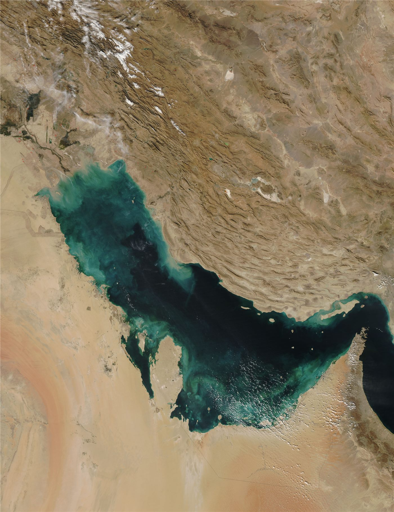

중동 ‘두 개의 열점’이 키우는 지정학 리스크… 세계 경제도 긴장
이란을 둘러싼 군사 충돌과 다른 분쟁지의 긴장이 겹치며 중동의 지정학 리스크가 커지고 있다. 에너지 시장과 세계 경제도 긴장 속에 흐름을 주시한다.
형덕창 기자 · 2026.07.23
橋국제

중동에 ‘두 개의 열점’이 형성되면서 지정학적 위험이 높아지고 있다는 분석이 나온다고 환구망이 전했다. 주요 원유 산지와 수송로가 밀집한 이 지역의 불안정은 국제유가와 물류에 즉각적인 영향을 준다.
광고 문의 · 300×250호르무즈 해협 봉쇄 위협이 현실화하면 원유·천연가스 수송 차질과 보험료 상승이 뒤따른다. 이는 에너지 수입 의존도가 높은 나라들에 특히 큰 부담이 된다.
각국은 확전을 막기 위한 외교적 노력과 함께, 에너지 비축과 공급처 다변화로 충격을 줄이려 한다. 그러나 근본 해법은 긴장 자체의 완화에 있다는 진단이 많다.
華橋時報는 지정학 분석을 특정 진영의 이해가 아니라 세계 시민의 생계라는 관점에서 전한다. 멀리 떨어진 분쟁이라도 유가와 물가를 통해 재한 화인 가정의 장바구니에까지 영향을 미친다는 점을 균형 있게 짚는다.
출처·참고 (사실 확인용 — 본문은 직접 재작성)
· 環球網
· 環球網